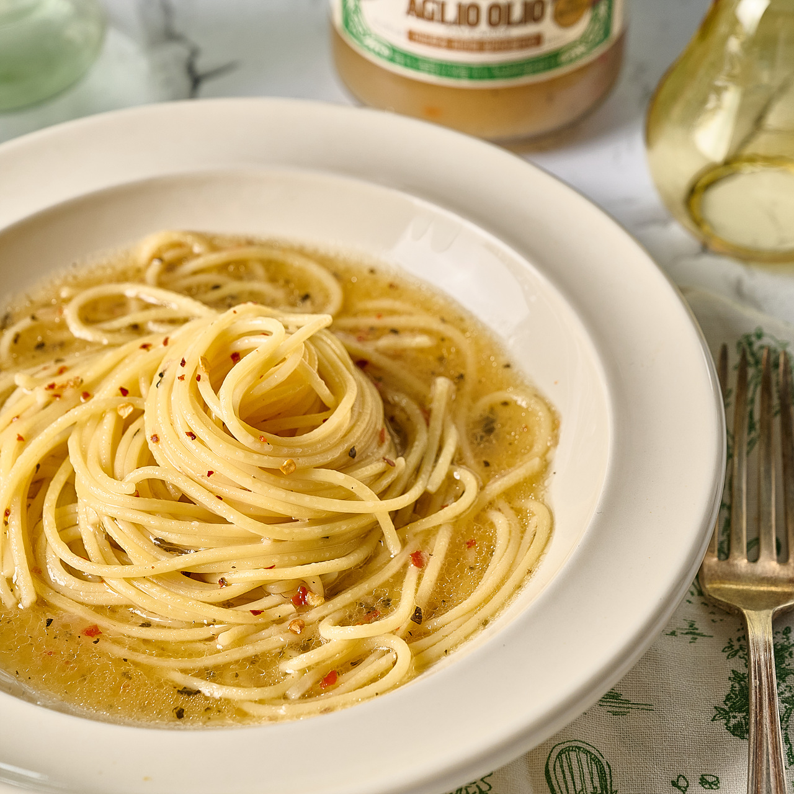

음식 소개
마늘과 기름을 곁들인 스파게티 알리오 올리오는 이탈리아 남부 지역 나폴리에서 시작된 전통적인 이탈리아 파스타 요리입니다
좋아하는 이유:
이탈리에에 놀러갔을때 알리오 올리오를 먹어봤는데 너무 맛있어서 그 후 집에서 만들어 먹었다. 방학때 매일 일주일동안 점심으로 먹은 적이 있다.
| 알리오 올리오 파스타 만드는 방법 | |
|---|---|
준비물 |
 |
만드는 방법
|
|
|
*주의사항
|
|
| 참고한 동영상 |